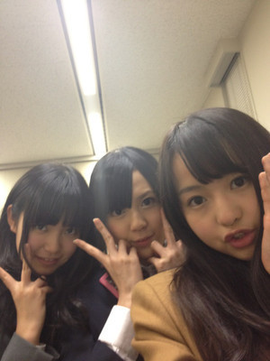
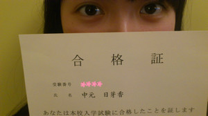
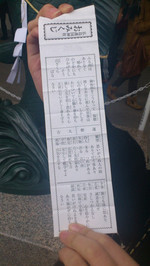

返回列表-BACK TO INDEX
Happy Birthday Dear ちまーっ!
お誕生日おめでとう(*^^*)/
ちま(樋口日奈chan)はしっかり者で、努力家で、すごいなっていつも思います。
お勉強も頑張っとるし、ダンス上手いし、歌舞伎なんか出来ちゃうし
ちまを知っていけばいくほど愛おしく...(//ω//)にゃほ
14歳!まだまだ若いなー!!!
これからもステキなちまでいてね。
はいー下北FM楽しかったですどーん∩^ω^∩

べびたん・ひめたん・やまとまとちゃんってゆーふわふわトリオ♪
べびたんと「誰が突っこむんかねー。」って話をした。
確かに...(;'ω`)わら
ニコ動で生放送だったから、番組宛て下さったメールは
タイムリーで読ませていただきました(^・ω・^)
会場に来て下さった方はあたたかかった!ひめたんはみなさんに救われました。
感謝!!!
ＤＪ大倉さんはお見立て会以来ということでしたが、相変わらずお元気で優しかったです。
何もわからないひめたんたちに
「全然緊張しなくていいからねー♪」
って声かけて下さったり、助けてもらいましたっ
共演者のみなさん、めっちゃ可愛かった(。・ω・。)♪
そしてひめたん初下北上陸、街の雰囲気に感動しましたー!
べびたんは番組で下北常連さん宣言してたよね(ω)
実際タクシー降りてから会場着くまで、オススメのお店とか教えてくれた★
とまちゃんとべびたんとひめたん、３人でいつかショッピングしたいなって話になったんよー(・∀・)!
んー。いつになるんかなー？
えっと、番組で何やったか復習して書いておくので、見逃したー!って方もチェック♪
会いたかったかもしれない
片想いFINALY
GIVE ME FIVE
ぐるぐるカーテン
の順で曲やPV流れたりー
自己紹介
ぴったり46
アイドル診断テスト
したりー
なんて雑な復習の仕方(o>ω<o)/
ぴったり46＝３人のプライベートトーク
アイドル診断テスト＝演技だと思って下さいな。
あっそだそだ番組みた方に質問ー。
ひめたんのアイドル度、何点ですか(^^)？
スケートの練習をしてて危うく転びそうになったのを助けてくれた男の子にひとこと
乃木メンみーんなに再現してほしいー。
え？
ひめたんは何て言ったかって？
恥ずかしいからもう言わなーい(*/ω＼*)!!!
わら
ひめたん
2012/01/31 23:24｜
久しぶりの日記ですひめたんです。
若月さんに砂肝ジャーキーを献上した中元です。
だってお腹空いたって言ったからー♪
あれは横浜の駄菓子屋さんで見つけた、甘い物を我慢した結果です。
ほんまに美味しいよ
ん～～～～～早く本題に突っ込んじゃおーっと♪
さてさて、当分のあいだ日記をおやすみしててごめんなさい←
ひめたん大図鑑だよ。どうでしたかな(・∀・)？
ほんとはまだまだあるんぢゃけど、そろそろひめたんブログも
恋しくなったころではないかなー？
っていうか、ひめたんが恋しいので(//∀//)
続きはまたの機会に。
今日はひめきゅん♪のみなさんに大事なご報告!
ひめたん!
無事志望高に合格しました!

たくさーんの方からいただいた応援のおかげですっ
本当にありがとうございます
高校生んなったら今まで以上に勉強も大変になるけど
活動も頑張りたいー(ω)
どっちも全力で頑張るって決めたから!
４月からの目標!
ぜーんぶトータル的に
ステキな女子高生になります(*^^*)ゝ
あーそだそだ。
選抜チーム全国キャンペーンお疲れ様でした(^^)/
さゆにゃん・まいやん・あみあみ・ほしみな広島来てくれてありがとうっ
まあやもありがとうっ
そして乃木坂46に会いに来て下さったみなさん本当にありがとうございました!
ひめたんもまあやみたいにお手伝いしたかったー。
けど新生活と進学順備のため東京でバタバタなう(>_<)
次こんなステキなイベントがあったらぜひ参加したいなって思います
そのためには選抜入るしかー!!!!!
(・∀・)♪ 頑張ります！
ひめたん
2012/01/31 00:15｜
271ブログのコメントがたくさん増えても、ある程度はファンとの交流を計ってくれるかなー？？？
もっちろん(ω)♪
だからみなさんこれからも遊びに来てくださいよー？
272日芽香さんってボケとツッコミどっちですか？
大抵ぼけ(ω)
でもひめたん以上にボケる人といるとツッコミにかわります♪
273ひめたんお正月は着物着たりするの？（今年は東京だからないかな？）
広島におっても着物は着んかなー。
去年の夏祭りの時は着ましたきました(^^)
274メンバーと初詣に行くのかな？
んー未定('・・`)
地元に帰ってから初詣いきたいんぢゃけど、まだやっとるかなー？
その頃には終わっとる気がする...。
275おみくじ何でしたか？ひめたん萌吉とか出そうやし(^_^)
も、も、もえきちー!!!
(*/ω＼*)
萌吉のおみくじ引きたいっ!
でもひめたん実際、去年末吉引いたんよ...。
ぢゃけ怖くて引けない('・・`)
276あ、日芽香ちゃんは初詣には行かれましたかー？？
277初詣は3日までに行けばOKだった気がする(｀・∀・´)
278今日中に行ければセーフだね♪
ひめたんは行けなかった('・ω・`)
代わりに昨日家族みんなで行ってくれたみたいです♪
そして代わりにおみくじ引いてくれたんと。
ひめたんの今年の運勢はー？
どぅるどぅるどぅるどぅるーじゃじゃじゃん!
大吉!!!!!!

じゃなくて
ひめたん小吉。
(`・ω・')
279初夢何か見ましたか～？？
あー覚えてない('・ω・`)
しかもその日年賀状書いとってあんま寝とらん...
うー来年こそは富士・鷹・なすび!
280お正月といえばお年玉、ひめたんはもらったのかな？
ぱぱままの分は送ってもらったです♪
親戚のみなさんには今年ご挨拶できんかった('・ω・`)←
お年玉とかいらんけ会いたい!
親戚のクッキーちゃんってヨーキーにも会いたーい!!!
281ひめたんもお餅食べたかな？
ひめたんはなに餅が好き？
お雑煮のお餅を２分の１こ食べた(・∀・)
いつもはもっぱらきなこ餅派!ひめたんいっつも焼く係よーお♪
電子レンジだって美味しく焼けるんぢゃけ。うん
282今気がついたんだけど、中元日芽香という名前に「元日」が入っているね☆
すごく縁起のいい名前だね(^O^)/
中元日芽香...ほんまぢゃー!
15年と8ヶ月半生きてて、始めて自分の名前の縁起の良さに気づいた瞬間。
283お買い物に行って福袋を買ったのかな？
お気に入りの洋服とかは入っていましたか？
福袋買いましたよ(^^)
ひなぴょん(川後陽菜chan)とおんなじ福袋かったら、中身がまったくおんなじだったー
おそろいってことですね♪
284ひめたんを妹にしたいのですが、いいですか
もちろん(ω)♪
いや、ひめたんの中ではすでにお兄さんお姉さんとお話ししとるつもりーふふふ。
285シングルイベントで個別があるけど、ひめたんに何回も行くと迷惑ですか？？？
全然まったく!むしろ嬉しいーいいぃ♪♪
何回も来てきてー!待ってますよー＼^^／
楽しいお話いっぱいしたいな!
286明日どんなことやるんやろ ひめたんどんなことやったか教えてね
287また夜にでも今日のレポお願いしま～す!(b^ー°)
288blogでレポート待っとるばい！
289イベント終わったらちょっとでいいからネタ晴らしよろしくね。
今日は何をしたかというとね
お餅つきをさせていただきー、
おしるこをみなさんに振る舞わさせていただきー、
新年の抱負を発表させていただきましたー。
続きはこっちで読んでね↓
ひめたん(* ゝω・*)ノその50
290広島弁で、さよならや、バイバイって、どう言いますか？
生駒さんの、へばなっ！が、気になります。
広島弁で、インパクトのある挨拶を教えてください。
ばいばいー...
広島の挨拶はわりと普通かな。
そう!メンバーのみんなと気づいたのよー!
広島とか大阪とか九州は語尾が方言になったりするんぢゃけど、
北海道とか秋田とかは名詞が方言ってゆー。
あっ！ばいばいーの他に...ほいじゃーとかほいじゃーねーとか言う人もいる。わら
291ショッピングはどちらに行かれたんですか＾＾？
渋谷？
池袋・渋谷・原宿!
今どきのおんなのこが集まる場所を制覇してまいりました(ω)★
292四季の中では何が一番好き？？
はる(*^^*)
春は出会いの季節っていうし
あったかいからお昼寝するのにちょうどいいし
ひめたんのお誕生日が待っとるし♪
今年の春は特に節目になりそうだし。
293ひめたんは乃木坂メンバーのblogは見てる？
ぱそこんが手元にある時は全員分みます♪
ひめたんの携帯だとフィルタリングかかっとってブログにアクセスできん('・ω・`)ちーん
乃木坂キャラ濃ゆいですよね。文章見ただけで誰が書いたかわかるもんっ
294めざましテレビ観てたら乃木坂の新しいCM流れてたよ～
「乃木坂46、始動」ちなみに、7時25分ごろだった観るしか！w
報告ありがとうございます(`・・)ゞ
乃木メン誰もそのＣＭ見とらんかったー!
みるしか!
295乃木坂コールって、メンバーが考えたのかな？
そですよ♪
メンバー全員でちょっとずつ案出し合って決めましたよー(ω)
296ホームシックに、なっていませんか？
寂しくなったら、声に出してくださいね。
ブログで叫んでもいいからさ。
帰りたーい(>_<)!!!
297『チャラ字』=『汚い字』って意味なんだけど広島では通じる？
へーえ初知り!
広島人には通じない多分。
方言とは違うんでしょうねおそらくね。
298うちのショップにも乃木坂のPOPと予約券が並んでるよ！
緊張？ワクワク？
どんな心境なんかな？
あんびりーばぼー!
299乃木坂のレッスンってどれくらいの頻度であるの？毎日？
まいにち(`・・)ゞ
んでもひめたんは、平日は広島なので参加できません。
東京組がうらやましいー。ひめたんも上京してはよレッスン参加したい!
300オタフクは有名だけど牡蠣醤油はとう？
やっぱりたくさん使うの？
牡蠣醤油使ってみたい!
ひめたん家にはないです。食べたことないー。
でも今まあや(和田まあやchan)に聞いたら、
和田家の食卓には常備してあるんだって(ω)♪
え？中元家だけ？
2012/01/29 14:10｜
241ひめたんはどんな休みの日はどんな感じの私服なのですか？
私服がアイドルぽいってのはよく言われるかなー
どこかにぴんくが入っとる。意識しとるわけぢゃないけどぴんく入っとる(^^)
242ひめたんが最初に握手してもらった人って、覚えていますか？
はいー(ω)/
初めての握手は、Perfumeさんが地元でやったインストアライブ!
あのときも今も、謙虚な姿勢は変わってないPerfumeさん(*^^*)尊敬。
243今回は、個別に話し出来るのでしょうか？解ったら教えてください。
それは当日までのお楽しみに(ゝω・)♪
by.乃木坂46マネージャー
244受験まであと数か月だけど、危機感ある？正直、僕はないよｗ
あーああぁ。受験怖いです怖い怖い。
全国の受験生のみなさん一緒に頑張ろー!おー(ω)/
さゆりんごちゃん(松村沙友理chan)もブログで応援してくれとったよー♪
245大分弁の言い回しも可愛いね♪せいたんに教わったのかな？
次はいこまっちの秋田弁かな(^ω^)/
せいたん(畠中清羅chan)やみさみさ(衛藤美彩chan)とお話ししよったら自然に覚えたー♪
しらしんけん頑張るけん、ひめたんのこと応援しちょってな？
(・∀・)どや
秋田弁はなかなか難しそーう。いこまっち(生駒里奈chan)に習ってみます。
がっこ♪
246スクールではお化粧までは教えてくれなかったのかな？
スクールの発表会の時は、ままにメイクしてもらってました!
あの時は「各自で」って言われてとったんですよ。
でも乃木坂入ってみたら、みんなかわいいしメイク上手ぢゃし
こりゃひめたんも頑張らんにゃって思いますよね(∀)
247新年最初をサッカーから始めるなんて中元家はアグレッシブですね(笑)
ふふふ(ω)
サッカー「観戦」から始まるってことですよ^^
新年のどの特番よりもサッカー観戦に燃えてるみたいです。
248今東京にいるんだねぇ～正月くらいはゆっくりできるんかな？
1月2日から活動開始です乃木坂46。
頑張るぞー!!!
249ひめたんは香水つけてる？つけてたらどこのか教えて///
基本つけてないけど、ひめたんに染み込んだおうちの香りがお友達には好評(//ω//)
たまーに、MARCJACOBSの香水とか使うかなー♪
250ひめたんおれ魔法使いたいねんけどどうしたら使えるようになるかな
だったらひめたんが魔法使いになって、魔法が使えるようにしてあげるー(*/ω＼*)
ところで、ひめたん魔法使いたいねんけど、どうしたら使えるようになるかな。
...あれ？
251ひめたんのサイゼリアでオススメのメニュー教えてー
カルボナーラ(ω)!
カルボナーラの美味しさは半端なーい♪
庶民でごめんなさい。わら
最近はカロリー抑えようと思って、お野菜もちゃんと食べますよー
252ジョイフルって西日本なんだ！
以前、茨城に行った時にあったけど…さり気なく関東進出してるのかな？
へ？そうなんですか？知らんかったー(・o・ノ)ノ!
前にメンバーのみんなとジョナサン行った時に、
西日本チームのみんなで大発見しちゃったんです♪
うん。ジョイフル全国進出しちゃえー!
253初詣行く？？
254初詣は行くのかな？
ああ行ってない...。
明日行ってもセーフですか？
256広島の人はオタフクソースを何にでも入れるってホント？
これほんと。中でもひめたんのぱぱは異常です。
揚げ物、目玉焼き、カレー...。
何でも合うんだなこれが(*^^*)みなさんもお試しあれ!
257ひめたんはコメントしている人の名前って覚えてるのかな！？
もし覚えてくれてたら握手会で挨拶しようかな
握手とかするときに名乗ってくださったら「あー!」ってなる(ω)♪
挨拶してくださーい。待ってます★
258デビューシングルのオリコン初登場の順位は、ズバリ何位を狙ってる??
そりゃあやっぱり1位しかないぢゃろー(*/ω＼*)
ひめたんのままも買うって言っとったし♪うん
259携帯に貼ってあるシールは何かな？
「もう我慢できません-I cannot endure It anymore-」
わんちゃんがごはんを我慢してるイラストつきω
ぴったりぢゃーんって思ったから(*^^*)
260ひめたんの部屋はどんな感じなのかな？
んー
家具は赤と白でまとめてる!
261この写真いつ撮ったの？ホテルで撮っているようにも見えるのだが…。
ぴんぽーん(∀)!
乃木坂の初期の初期!
ひめたん最近前髪分けとるんぢゃけど、
ぱっつんと分けとるのみなさんはどっちが好きですかー？
262初夢何か見ましたか～？？
あー覚えてない('・ω・`)
しかもその日年賀状書いとってあんま寝とらん...
うー来年こそは富士・鷹・なすび!
263お正月といえばお年玉、ひめたんはもらったのかな？
ぱぱままの分は送ってもらったです♪
親戚のみなさんには今年ご挨拶できんかった('・ω・`)←
お年玉とかいらんけ会いたい!
親戚のクッキーちゃんってヨーキーにも会いたーい!!!
264ひめたんもお餅食べたかな？ひめたんはなに餅が好き？
お雑煮のお餅を２分の１こ食べた(・∀・)
いつもはもっぱらきなこ餅派!ひめたんいっつも焼く係よーお♪
電子レンジだって美味しく焼けるんぢゃけ。うん
265今気がついたんだけど、中元日芽香という名前に「元日」が入っているね☆
すごく縁起のいい名前だね(^O^)/
中元日芽香...ほんまぢゃー!
15年と8ヶ月半生きてて、始めて自分の名前の縁起の良さに気づいた瞬間。
266 お買い物に行って福袋を買ったのかな？
お買い物に行って福袋を買ったのかな？
お気に入りの洋服とかは入っていましたか？
福袋買いましたよ(^^)
ひなぴょん(川後陽菜chan)とおんなじ福袋かったら、中身がまったくおんなじだったー
おそろいってことですね♪
267ひめたんを妹にしたいのですが、いいですか
もちろん(ω)♪
いや、ひめたんの中ではすでにお兄さんお姉さんとお話ししとるつもりーふふふ。
268シングルイベントで個別があるけど、ひめたんに何回も行くと迷惑ですか？？？
全然まったく!むしろ嬉しいーいいぃ♪♪
何回も来てきてー!待ってますよー＼^^／
楽しいお話いっぱいしたいな!
ぴんぽーん(∀)!
乃木坂の初期の初期!
ひめたん最近前髪分けとるんぢゃけど、
ぱっつんと分けとるのみなさんはどっちが好きですかー？
269ひめたんは乃木坂のテストで１番成績よかったので、勉強法とか聞きたいです
全国の乃木坂応援してる受験生に、ひめたんから応援メッセージくださーい＼(^O^)／
はいー。
お勉強法かぁ。暗記系の科目だったら、オレンジのペンとかでノートまとめをして
赤下敷きで隠す!スライドして覚える!
ノートまとめで覚えて、さらに復習して頭にたたきこむ(`・・')
受験生のみなさーんひめたんと一緒にステキな春を迎えましよーう♪
体調崩したら遅れをとっちゃうから、無理はせんでね？
270今年のひめたんの目標は何ですか?
乃木坂46としての活動が充実できるよう頑張る!
ステキな女子高生になる(*^^*)
2012/01/28 21:09｜
211日芽香ちゃんは今年のクリスマス。どのように過ごしたんですか？
初めて地元を離れて東京で過ごしました。
メンバーのみんなにメリクリー!って言えて幸せー

ぽ
212ひめたんはいつまでサンタがいると信じてましたか？？？
(*/ω＼*)
213『乃木坂って どこ？』の司会進行役のバナナマンのお二人はひめたんから見て
どんな印象の方かな？
ずーっとテレビで拝見してただけに最初は緊張...
したけど、同時に親近感わくわくo(^-^)o♪
後日おともだちみんなに自慢させてもらいました。わら
やっぱりオーラが違う!ひめたんももっとキラキラオーラ放たなきゃ★きらーん
214握手の時思ったけどひめたんはわざと上目使いで話してるの？
いやいやそんなことないはずー何でぢゃろ(ω)
ひめたん初めましての方のおかお見るとき、恥ずかしくてうつむいちゃうって
クセがあるんですよね多分ー。
だからかな？気をつけます(`・・)ゝ
もっとしっかり目あわせよっかなー...(//ω//)きゃは
215ひめたんはお正月は何するのかな！？
ひめたんが受験に合格するように自分もお参りしますね。
いやーんありがとうございます♪♪
ひめたんもお参りしたいけど、でも親戚のみんなにあいさつもしたいしー、
今さらぢゃけど年賀状書いとらんしー←え
216ひめたんの部屋着可愛いね水玉すきなのかな？
確かに水玉好きかも∩^ω^∩
基本かわいければ何でもおっけーって人かな？
このルームウェアは一目惚れしましたよ♪♪
色とかデザインとかお気に入り^^うん。
217上手く感謝の気持ちを伝える方法とかありますかね？
ひめたんも感謝の気持ちを表に出すのあんま得意な人じゃないですよ('`)
考えとることとかヒミツ事とかはわかりやすいってよく言われるのにー!
素直になるの恥ずかしいんですよね。ふふふ
たまに、たまーに、素直になったらいいのでは？それでも十分伝わりますよー。
218握力強いなら今度勝負しよ～。オレとか握力85しかないからな（照れ←あ
は、はちじゅうごー!?
♪キミってーもしかしてもしかーして～
ひめたんの3.5倍はありますね？
わおw(°O°)w!!!
2195日の当落がもうすぐ出るんだよね。果たしてひめたんに挨拶に行けるのか？
応募した方全員来てほしーい(o>ω<o)!
当たったよーって方は報告待ってます♪
220ところで、『ドリミネーション』って、ドリーム+イルミネーションの事なの？？？
Dream + Illuminations = Dreamination ？？？かな？？？
靴の周りは水晶のモチーフなのかな？ららちゃんの馬車、一般の人は乗れるのかな？
◎ドリームあんどイルミネーション。確かにそんな掛詞が隠れてるー!納得。
◎ひめたんもそうだと思います(^^)くりすたる!
◎りあるな話、ホームページで予約するとララちゃんの馬車に乗れるんとー。
ひめたんも来年はララちゃんに乗りたーい(^^)
221ファミレスなら何処が好き？
おともだちと行くのはサイゼリア
ふぁみりーと行くのはガスト
メンバーと行くのはジョナサン
囲みに東日本のジョナサン＝西日本のジョイフルなんだってー♪♪
222山口県も近いしふぐとかも食べるのかな？
それがおとなりの県の名産品って普段あんまり食べる機会ないですよっ
ふぐ食べたことないしー('`)
223ひめたんはプレッシャーには弱いのかな?(笑)
プレッシャー...うん弱い。弱いです。
不安やら緊張やらはひめたんのお腹を刺激します('・ω・`)
いや始まってしまえば楽なんですけどね。慣れるまでが長くてー...。
224ひめたん、運動苦手なんだ？
にゃは(ω)バレちゃった♪♪
走る、飛ぶ、投げる、泳ぐ、何にもできません。てへぺろ。
ただしリズム感はあるみたいで、大縄跳びなんかは引っ掛かからんよ♪
225ひめたんは学校でどんなキャラですか？？部活の後輩に怒ったりしますか？
僕は学校で後輩に注意できなくて困っています＞＜
学校でもわりとこんな感じだと思いますよー。
ひとりだけおかしい子みたいになっとるんかなーって心配になりますか？←
それが、ひめたんの周りはみーんなおんなじノリだから全然浮いてないです♪
さすが中坊ーわら
後輩には結構怒る人(∀)
だって放送部元部長さんですよひめたん。
でも注意するのって難しいですよね。
信頼関係が出来上がってないと年上に耳を貸さないと思うし...。
あー、もちろん怒るのも大事ぢゃけど、
悪いとこ直ったらちゃんと認めることも大事だと思います(^^)
226社会が好きということなので…ひめたんは歴史で好きな時代とかありますか(・_・?)
ひめたん、戦はあんま好きくないです('・・`)
国風文化とかある平安時代が平和で好きすき(∀)/
暗記物は得意ぢゃけど、時代劇は怖くて見れないー
227ひめたんのカラオケ18番は？
♪へび～ろ～て～しょ～～～ん^^
228お正月広島で過ごすん？？乃木坂のメンバーと遊ぶん？
それが、今年は東京で年越しってことになりました(ω)
年始から入っとるレッスンはお休みしたくないなーと思って。
メンバーと遊ぶ...はいノープランです。わら
2295日のイベントハズレちゃったんだけど。次はいつひめたんに会えるんだ。
会えなすぎて病気になっちゃうんんだけど。
どうしたらいいかな？対処方法を教えてよ～。
ほえーいつになるんぢゃろ('`)
ひめたんに会いたい病はひめたんに会わないと治らんよー。
それぢゃお薬として、毎日ブログ遊びに来てくださーい!!
そこでお話ししましょうよ★
病状悪化するかな('・ω・`)
230ひめたんはチャレンジしてみたい髪型とかあるのかな？
あっアリスになってみたいー!!!
231ひめたん、広島弁無理して使ってる？
普通でいいのに(ToT)ちょっと不自然なような…。
えっ？
全っ然無理してないですよー？？
でも、文字にしちゃうとちょっと読みにくいかなーと最近思ってます。
232しっかし、よくメンバーの家に泊まりに行くなー！さすがは甘えん坊ひめたん。
何？ホテルじゃつまらないからつい泊まりに行っちゃうの？
いやーさすがに毎日遊びに行くのは申し訳ないだろうなーと思いつつ(^^)
みんなが誘ってくれるし、楽しいぢゃあないですか。
233せいたんコーデっていうのはせいたんの服？ せいたんが選んだコーデっていうのは？？
せいたんの服!
でさらに、せいたんがコーディネートした組み合わせってことです(∀)
234ひめにょん…野球好き？
ルールわかんない('・・`)
でも野球少年はかっこいいと思います♪♪
235ひめにょんいいよね（＾o＾）/ニックネーム変えちゃえば？
にょーん(`・ω・')
ひめにょん好きぢゃけど、ひめたんも好きなんよねー...
うん。その日の気分で決めよ。そうしよ!
236ひめたん、何人のメンバーの家に泊まりましたか。 泊まったメンバーの家に、何かマーキングしていますか？
４？４人で合ってますか？
うん。2012年の目標は「メンバー全員のお家を制覇する」!!!
...やっぱり、2020年くらいまでかかりそう(>_<)宣言するのはやめときます。
マーキング。わんちゃんみたいですね
237ひめたんはちょっとあごを引いて前を見るクセがあるのかな？
意識したことはないですー...。
だからクセなんかぁ(^^)わら
238こないだやった『ご当地アイドルNo.1決定戦』を優勝した『まなみのりさ』って先輩？
喋ったり一緒にステージに上がった事ってある？
先輩ですー!
クリスマスやらバレンタインやら、一緒にステージで歌わせていただきました(^^)
ユニット組んでいただいたこともありましたよ♪
まなみのりささんは常に意識が高くて、本当にいろんなこと教わりました。
今でも尊敬してます。
239ひめたんはお年玉もらったら何に使おうかもう決めてるかな？
or今までお年玉で買ったものはなーにー？(^O^)
今年は決まってないですー。
今までは福袋買ったり、ちっちゃい時はおもちゃ買ったり...
８割は貯金(o>ω<o)
240じゃあ俺はひめたんにキュンキュンだからひめきゅんって呼ぼうかな？どう？(笑)
きゃは(*/ω＼*)採用しちゃおっかなー？
ぢゃあ、「ひめたんにキュンキュンしてる人」＝ひめきゅん!
ひめたんふぁんのみなさんのことをひめきゅんって呼んぢゃおっかなー。
そう。あなたのことです。
2012/01/28 07:30｜
返回列表-BACK TO INDEX
{kind=link}
{kind=link}
{kind=link}
{kind=link}
{kind=link}
{kind=link}
{kind=link}
{kind=link}
{kind=link}